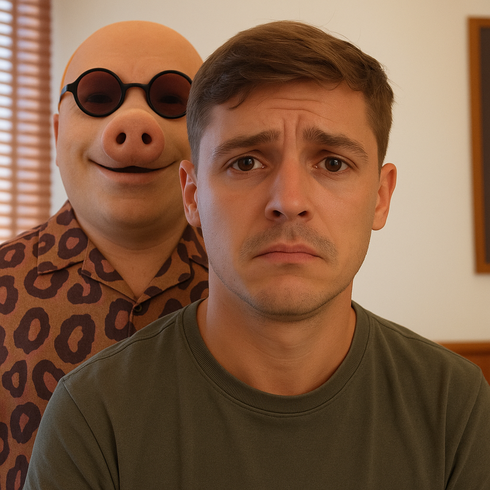

Songfestival
Lil Kleine heeft stiekem een relatie met John Pork?
Het begon als een grapje. Een meme. Een willekeurige TikTok-edit met dramatische muziek, slechte Photoshop en een bijschrift dat luidde: “Love wins.” Maar binnen een paar uur was Nederland in de ban van één brandende vraag: heeft rapper Lil Kleine stiekem een relatie met internetlegende John Pork?
Lees het hele artikel